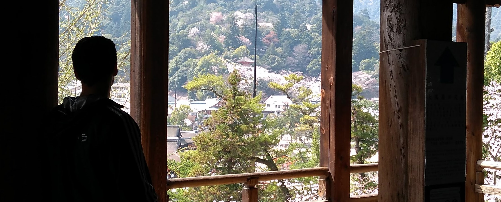
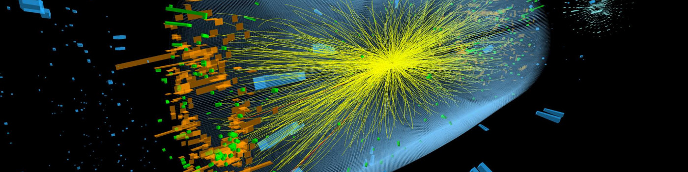

Intro

I am a results-driven Backend Engineer with a strong foundation in
computer science and a proven track record in developing robust and
scalable applications. As an AWS Developer Associate, I possess
extensive experience working with a wide range of technologies and
programming languages. Collaboration is at the heart of my approach,
and I thrive as a highly collaborative team player dedicated to
delivering high-quality solutions.
Throughout my career, I have consistently demonstrated my ability to
tackle complex challenges and deliver innovative software solutions.
With a strong emphasis on analytical thinking and problem-solving, I
have successfully implemented efficient backend systems that drive
business growth and enhance user experiences.
My passion for staying up-to-date with cutting-edge technologies and
commitment to continuous learning keep me at the forefront of the
ever-evolving tech landscape. By staying informed about the latest
industry trends, I ensure that I can leverage the most relevant
tools and frameworks to create scalable and future-proof
applications.
One of my key strengths is my ability to work effectively both
independently and as part of a team, fostering open communication
and collaboration. I value transparency, clear goal-setting, and
maintaining a positive working environment, as I believe these
factors contribute to the success of any project.
I invite you to explore my portfolio and learn more about my
projects and achievements. If you are seeking a dedicated backend
engineer who can bring your ideas to life and drive your business
forward, I am ready to collaborate. Let's connect and discuss how we
can work together to achieve your goals.
Thank you for visiting, and I look forward to the opportunity of
working with you!
Work

Work Experience
Toptal - Freelance Backend Engineer
I am currently working as a freelance backend engineer at
Toptal. In this role, I collaborate with clients to develop
robust and scalable backend solutions for their applications. My
responsibilities include designing and implementing efficient
architectures, integrating with third-party services, and
ensuring the security and performance of the systems.
CERN - Machine Protection Systems
Previously, I worked at CERN, where I contributed to the
development of machine protection systems. This involved
designing and implementing software solutions to ensure the
safety and stability of particle accelerators. I gained valuable
experience in working with cutting-edge technologies and
collaborating with a multidisciplinary team of scientists and
engineers.
CERN - Particle Acceleration Technology
Prior to my role in machine protection systems at CERN, I had
another contract at CERN working on the development of software
for a new particle acceleration technology called Awake. The
research conducted in this project was groundbreaking and
resulted in a publication in the prestigious Nature magazine. It
was an exciting opportunity to contribute to advancing
scientific knowledge in particle physics.
Bitnami (acquired by VMware) - Web App Packaging and Deployment
Before my time at CERN, I worked at Bitnami, a company that
specialized in web application packaging, configuration, and
deployment. I played a crucial role in ensuring the seamless
packaging and deployment of various web applications, enabling
users to quickly and easily deploy their applications on
different platforms.
About
I am a highly skilled and motivated backend engineer with a strong
background in algorithms and data structures and a proven track record of
delivering high-quality software solutions. I have a deep
understanding of various technologies and frameworks, allowing me to
develop scalable and efficient backend systems. With my experience
at CERN and Bitnami, I have gained valuable insights into working on
complex projects and collaborating with diverse teams.
My passion for technology and my dedication to delivering top-notch
results have consistently driven me to expand my knowledge and stay
updated with the latest industry trends. I'm always eager to take on
new challenges and work on innovative projects that push the
boundaries of what's possible.
Feel free to explore my portfolio and reach out to me for any
collaboration opportunities or to discuss your software development
needs. I look forward to connecting with you!
Contact